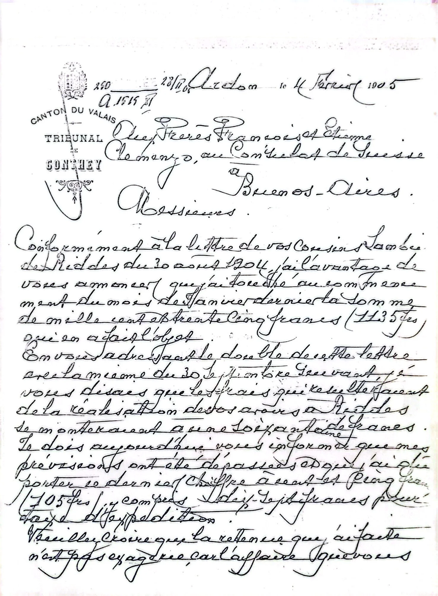
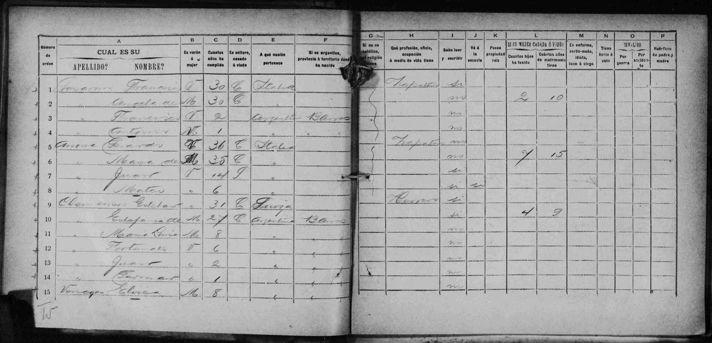
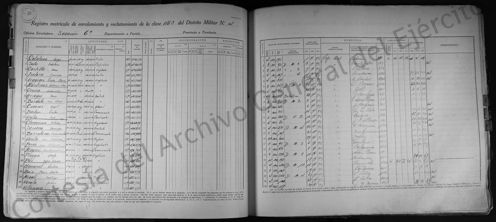

La historia
Etienne Clemenzo (p40), hijo de François Clemenzoz (François Clemenzoz) y Marie Louise Stalder (Marie Louise Stalder), hermano de François (François Clemenzo) y José (Jose Clemenzo).
Con Estefanía tuvo al menos nueve hijos, bautizados entre 1887 y 1908 en distintas parroquias de Buenos Aires y San Nicolás de los Arroyos, todos con actas ya transcritas en esta wiki: María Luisa Perceveranda (Maria Luisa Perceveranda Clemenzoz, n. 1887), Fortunato Abelardo (Fortunato Abelardo Clemenzoz, n. 1889), Juan Francisco (Juan Francisco Clemenzoz, n. 1891), Germán Cipriano (German Cipriano Clemenzoz, n. 1893), Ángela (Angela Clemenzoz, n. 1895), Petrona Estefanía (Petrona Estefania Clemenzoz, n. 1897), Modesta Damiana Clemencia (Modesta Damiana Clemencia Clemenzoz, n. 1902), Felisa (Felisa Clemenzoz, n. 1904) y Esteban (Esteban Clemenzoz, n. 1906). La partida de 1887 (Maria Luisa Perceveranda Clemenzoz) lo da, únicamente entre todas, como natural de Francia en vez de Suiza — ver la duda anotada en esa ficha.
Se enroló en el Distrito Militar N.º 4, Oficina Enroladora Sección N.º 6 (matrícula 466.639); la libreta registra 1,73 m de estatura y domicilio en Juan Bautista Alberdi 576. En 1905 liquidó junto a François los bienes familiares en Riddes vía el Consulado de Suiza en Buenos Aires — carta del tribunal de Conthey, Ardon, notario Alf. Frossard (transcripción completa en Carta del tribunal de Conthey (1905) — François Clemenzo · Etienne Clemenzo). Falleció el 22 de diciembre de 1938.
Cronología
| Año | Fuente | Qué dice |
|---|---|---|
| 1862 | Árbol (fecha de nacimiento registrada) | Nace en Riddes, Valais |
| 1873 | Registro de emigrados (Bourban/Carron) | Viaja a Buenos Aires con toda la familia, a los 11 años |
| 1886-09-11 | Libro de Matrimonios, Parroquia de la Concepción, Buenos Aires, acta N.º 347 | Se casa con Estefanía Venegas |
| 1887–1908 | Actas de bautismo (Maria Luisa Perceveranda Clemenzoz a Esteban Clemenzoz) | Nacen al menos nueve hijos, entre Buenos Aires y San Nicolás de los Arroyos |
| 1905-02-04 | Carta del tribunal de Conthey (notario Alf. Frossard) | Liquida junto a François los bienes familiares en Riddes vía el Consulado de Suiza |
| 1938-12-22 | — | Fallece |
Qué falta / hipótesis
Con el matrimonio y los nueve hijos ya documentados, lo esencial de su paso por Argentina está cubierto; queda cerrar datos puntuales (ver líneas de investigación) y la duda de origen (Suiza vs. Francia) que aparece una sola vez, en la partida de 1887 (Maria Luisa Perceveranda Clemenzoz).
Líneas de investigación
- Ubicar el certificado/partida de defunción completa de Etienne Clemenzo (22/12/1938)
- Confirmar si tuvo más hijos además de los nueve ya documentados (Maria Luisa Perceveranda Clemenzoz–Esteban Clemenzoz)
Fuentes
- Valaisans émigrés au 19ème siècle, Maurice Carron — p.250-251 (Riddes) — 2026-08-12
- Libreta de enrolamiento militar, Distrito Militar N.º 4, Oficina Enroladora Sección N.º 6, matrícula 466.639
- Carta del tribunal de Conthey, Ardon, 4-02-1905, notario Alf. Frossard — girada a él y a François vía el Consulado de Suiza en Buenos Aires (transcripción completa en Carta del tribunal de Conthey (1905) — François Clemenzo · Etienne Clemenzo)
- Libro de Matrimonios de la Parroquia de la Concepción, Buenos Aires, acta N.º 347, 11-09-1886 — transcripción completa
Documentos

Carta del tribunal de Conthey (1905) — François Clemenzo · Etienne Clemenzo 2 páginas Censo de Riddes de 1870 — Clemenzo · Clemenzoz · Stalder
Censo de Riddes de 1870 — Clemenzo · Clemenzoz · Stalder

Censo nacional de 1895 de Etienne Clemenzo — Buenos Aires Censo poco legible de Etienne Clemenzo
Enrolamiento militar de Esteban Clemenzoz Matrimonio de Esteban Clemenzoz con Estefanía Venegas
Matrimonio de Esteban Clemenzoz con Estefanía Venegas
 Matrimonio de Esteban Clemenzoz con Estefanía Venegas
Matrimonio de Esteban Clemenzoz con Estefanía Venegas